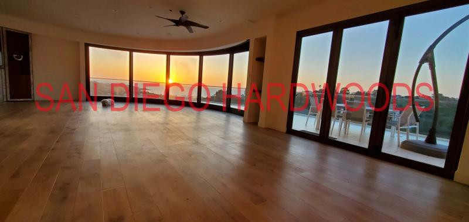

Dust-Contained Hardwood & Bamboo Floor Refinishing, Restoration, Deep Cleaning & Installation in San Diego
Since 1990, San Diego Hardwoods has restored solid, engineered, and bamboo floors through repair, dust-contained sanding and refinishing, intensive deep cleaning, maintenance recoating, and traditional nail-down and glue-down installation. Licensed, Bonded, Insured and Bona Certified.
Every flooring project starts with the right evaluation. We identify the condition of your floors — finish compatibility, wear layer, contamination, and project scope — explain every available option, and recommend the best solution based on more than three decades of hardwood flooring experience throughout San Diego County.
Text clear overall and close-up photos of your floors for the fastest initial review — you are also welcome and encouraged to call, and photos may be emailed when texting is not practical.
Dust-Contained Refinishing — real project footage, not stock video.
Watch Our Work on YouTubeThe Right First Step
Start With a Free Phone & Photo Assessment
Text clear overall and close-up photos of your floors for the fastest initial review. You are also welcome and encouraged to call, and photos may be emailed when texting is not practical. Many flooring questions can be evaluated initially through photographs and a phone conversation: whether your floors need cleaning, maintenance, repair, refinishing, or a closer look in person.
1. Text Photos for a Free Assessment
Text clear, well-lit photos of your floors to 858-699-0072. Include a few wide shots and close-ups of any problem areas. Photos may also be emailed to sandiegohardwoods@gmail.com when texting is not practical.
2. Call to Discuss Your Floor
We review your photos and discuss your floors by phone at no charge — an experienced specialist's initial read on condition, options, and realistic next steps. Prefer to just talk it through first? Call 858-699-0072 — you are always welcome to start with a conversation.
3. In-Home Assessment When Needed
When a project calls for an experienced set of eyes on site — or a property question needs a professional inspection — we recommend the appropriate in-home service and confirm the scope before scheduling.
Not Every Hardwood Floor Needs Refinishing
Many hardwood floors can be dramatically improved without sanding. Our Bona Power Scrubber deep cleaning system removes years of embedded dirt, contaminants, and residue before applying a protective low-VOC maintenance recoat when appropriate — and when a thorough cleaning is all a floor really needs, we offer cleaning-only service as its own scope. We also deep clean and maintain wire-brushed, matte, satin, and oil-finished hardwood floors using manufacturer-approved methods. Discover whether deep cleaning, recoating, or refinishing is the right solution for your hardwood floors.
How We Control Dust
Bona DCS 2.0 Portable Dust Containment — Virtually Dust-Free Sanding
Our Bona DCS 2.0 portable dust-containment system uses dual HEPA filtration and a continuous bagging system to capture sanding and abrasion dust right at the source — where the abrasive meets the wood — instead of letting it reach the air in your home. The result: sanding and abrading that is virtually dust-free in most normal project conditions.
Captured at the Source
Sanders and abrasion equipment run connected to the DCS 2.0 containment unit, so dust is pulled into the system as it is created rather than settling on walls, furniture, and vents.
Dual HEPA Filtration
Two stages of HEPA filtration scrub the recovered air, protecting indoor air quality throughout sanding, screening, and abrading — on every phase of the project.
Continuous Bagging
An endless-bag collection system lets us seal and remove captured dust cleanly, without opening a dusty drum inside your home mid-project.
Hardwood Floor Deep Cleaning & Recoating in San Diego
We deep-clean traditional and wire-brushed flooring, provide cleaning-only service where that is the appropriate scope, and recoat compatible finishes after sufficient cleaning and preparation. Suitable high-maintenance oiled floors can be converted to durable, easy-to-clean, low-sheen, low-VOC waterborne polyurethane systems such as Bona Traffic HD—often without full sanding.
Bona Certified Hardwood Flooring Specialists
We use premium Bona finishing systems, GREENGUARD Gold-certified low-VOC finishes, and proven installation techniques to deliver beautiful, durable hardwood floors with exceptional indoor air quality and long-lasting performance.
Professional Flooring Evaluations & Inspections
Experiencing cupping, finish failure, moisture issues, or installation concerns? We provide paid on-site evaluations, forensic-style analysis, moisture readings when relevant, and written documentation for insurance claims, disputes, and expert second opinions.
Request an Assessment: Text photos to 858-699-0072.
Book a Consultation: sandiegohardwoods@gmail.com.
Professional Equipment. Superior Results.
- Advanced sanding equipment for flatter, more consistent floors
- Bona DCS 2.0 dust containment — dual HEPA filtration capturing dust at the sanding source
- Premium Bona finishing systems for exceptional durability and long-lasting beauty
- GREENGUARD Gold-certified low-VOC finishes for healthier indoor air quality
Bona Certified Craftsman
San Diego Hardwoods is a Bona Certified Craftsman — a factory-trained credential held by a select group of hardwood flooring professionals nationwide. Certification reflects hands-on mastery of Bona's professional sanding, dust-containment, and finishing systems, along with GREENGUARD Gold-certified low-VOC finishes and the documented craftsmanship standards behind every floor we restore.
Real San Diego Hardwood Floor Projects
Eighty-nine real hardwood floor refinishing, sanding, repair, deep-cleaning and restoration projects from homes across La Jolla, Del Mar, Rancho Santa Fe, Encinitas, Carmel Valley, and throughout San Diego County.


.jpg)


{kind=link}



Keep Exploring
Browse Our Detailed Project Galleries
Five in-depth galleries of recent before-and-after projects, plus a dedicated solid wood installation gallery.
Watch Refinishing VideosDeep Cleaning Hardwood FloorsAbout San Diego HardwoodsContact Us
San Diego's Hardwood Floor Refinishing & Installation Specialists Since 1990
For more than 35 years, San Diego Hardwoods has specialized exclusively in hardwood flooring — dustless refinishing, nail-down and engineered installation, repairs, water damage restoration, custom staining, deep cleaning, maintenance coats, and specialty restoration throughout San Diego County. Every project is personally performed by an experienced owner-operated craftsman using commercial-grade rotary sanding equipment, HEPA dust containment systems, and premium Bona finishing products.
Professional Hardwood Flooring Services
- Dust-Contained Hardwood Floor Refinishing
- Traditional Nail-Down Hardwood Installation
- Glue-Down Hardwood Installation
- Engineered Hardwood Installation
- Solid Hardwood Installation
- Oiled-Floor Conversion to Waterborne Finishes
- Bamboo Flooring Installation & Refinishing
- Hardwood Floor Repairs
- Water Damage Hardwood Restoration
- Termite Damage Repairs
- Custom Hardwood Floor Staining
- Modern White & Scandinavian Finishes
- Wire-Brushed Hardwood Refinishing
- Oil Finished Hardwood Floors
- Bona Traffic HD Finishes
- Commercial Hardwood Flooring
- Hardwood Floor Maintenance Coats
- Bona Power Scrubber Deep Cleaning
Why Homeowners Choose San Diego Hardwoods
Unlike large flooring companies that rely on rotating crews, every project is personally supervised and completed by an experienced flooring craftsman. We specialize in real hardwood—not vinyl flooring—and continue to install and restore traditional solid wood floors using methods refined over decades.
Whether your floors need complete refinishing, custom color matching, structural repairs, deep cleaning, or a brand-new installation, we recommend the solution that delivers the best long-term value—not simply the most expensive option. All work is guaranteed and performed by a small crew of skilled, courteous craftsmen, and texting photos of your floors is the fastest way to get an expert assessment started.
Serving San Diego County
We proudly serve homeowners throughout La Jolla, Del Mar, Rancho Santa Fe, Encinitas, Solana Beach, Carmel Valley, Pacific Beach, Mission Hills, Point Loma, Coronado, Carlsbad, Oceanside, Poway, Rancho Bernardo, Escondido, and surrounding San Diego communities.
Decades of Expertise, Properly Applied
Professional Floor Assessments, Inspections & Consultation
Our core business is the flooring work itself — refinishing, restoration, deep cleaning and recoating, repairs, and installation. When a floor or a property decision calls for professional expertise on site, we also offer paid assessment and inspection services: a $95 in-home project assessment, pre-purchase floor inspections with optional written reports, and complex damage, dispute, and insurance analysis. Every one of them begins the same way: with a free phone and photo assessment.
Recent Hardwood Floor Projects
Encinitas Oceanfront Home
Complete restoration of a sun-faded engineered maple floor exposed to years of coastal sunlight and salt air. The aluminum oxide finish was professionally removed before applying Bona Traffic HD commercial-grade finish for exceptional durability and UV resistance.
Carmel Valley Richard Marshall Walnut Floors
Restoration of premium walnut flooring with worn tung oil finish using planetary rotary sanding equipment to achieve an exceptionally flat surface before applying a durable commercial-grade Bona waterborne finish.
Watch Our Hardwood Floor Refinishing Process
See real projects from around San Diego, including sanding, repairs, custom staining, deep cleaning, and finished results. Every video features actual customer projects—not stock footage.